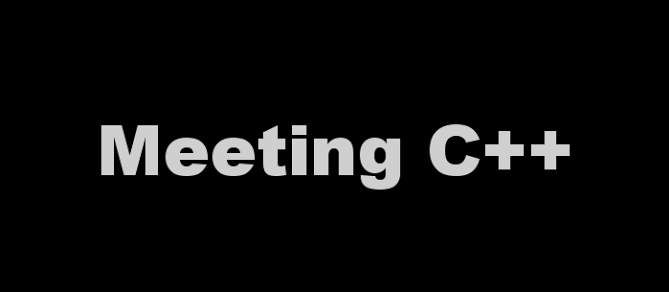

As officially has been announced we are proud sponsors of Meeting C++, one of the best C++ community meetings that takes place in Berlin on the 5th and 6th of December 2014.

Why sponsor Meeting C++?
We are a C and C++ dependency manager. We are devoted to both communities. We want to stay updated and there is no better place for that to happen than in Meeting C++. We love C and C++. Our founders are university professors that have teached and developed in both languages for many years. Hence they experimented the pain of not having a proper dependency management in any of them.
From that pain biicode was born. We have been two years developing it and it now starts to look pretty neat. Nevertheless the tool keeps evolving, improving and releases are pushed every two weeks.
C++ community
Our community is growing too and that is why we want to spread the word more and more. Meeting C++ is the place to do so. Scott Meyers, Edouard Alligand, Hartmut Kaiser and many more will be there. If some of the pro developers attending the conference know about biicode, use it just once and give feedback, the trip will be worth it. We are open sourcing it too precisely because of this: to get the support of the community, and build together a great deps manager for C++.
In conclusion, we are sponsoring the event to get our tool known and receive feedback to keep improving from the best C++ devs in the world. Their feedback will make it better and our community will not only be broader but way much better.
Thank you all and we hope to see you in Berlin in a month.
Related Posts